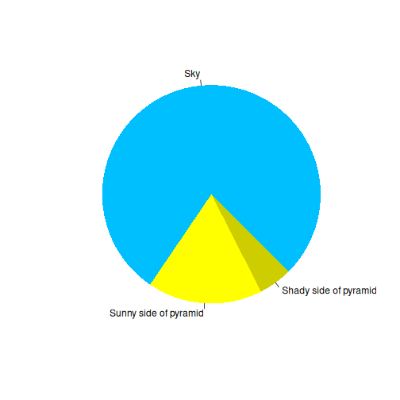

All in One View
Content from Intro to IoT for Horticulture and Open Source
Last updated on 2026-11-10 | Edit this page
Overview
Questions
- What is the Internet of Things (IoT)?
- Can open-source technology and IoT bring precision agriculture to smallholder farmers?
- How does an electronic sensor turn the environment into data?
- What does a complete IoT monitoring system look like?
- Why does owning the technology and the data matter?
Objectives
- Explain how crop-specific environmental needs lead to science-based advice
- Describe how a sensor converts an environmental parameter into a measurable signal
- Explain what the Internet of Things is, and the basic network terms behind it
- Outline the parts of an IoT system, from sensor to alert
- Compare the benefits and limitations of proprietary and open-source systems
Note: for development and illustration purposes, some content in this episode has been copied verbatim from the Carpentries Incubator lesson Introduction to the Internet of Things (iot-novice).
The guiding question
This lesson introduces the use of Internet of Things (IoT) devices in the agrifood sector. Throughout the course we keep coming back to one question:
Will open-source technology and IoT popularize precision agriculture among smallholder farmers?
To answer it, we need to understand how the technology works, so that we can adapt it to the challenges and projects we work on in agrifood systems (AFS) and horticulture. That is why we start by stepping back to the basics: understanding the building blocks is what allows us to make a leap later.
From plant needs to science-based advice
Plants respond to their environment, and different crops have different environmental needs. Take a single parameter, temperature:
| Crop | At 25 °C |
|---|---|
| Broccoli | In its “dead zone”: poor growth |
| Maize | Good growing conditions |

Matching what a crop needs with the conditions actually measured is, in a nutshell, how science-based advice works.
From theory to practice: electronic sensors
How do we know the real conditions in a specific field or greenhouse? An electronic sensor focuses on one parameter and makes something intangible (temperature, humidity, pH) measurable by converting it into an electrical signal.
The principle is simple. A microcontroller sends a known voltage through a circuit that includes the sensor. When the parameter changes, the sensor changes that voltage, for example from 4 V to 3.8 V. The microcontroller measures the difference and, using the sensor’s known response (its calibration), converts it into a value such as °C or % humidity.
Isolating the violin
The environment is complex: many things happen at the same time. A sensor lets us isolate one parameter from that complexity, like listening to an orchestra and choosing to hear only the violin.
The same principle applies far beyond horticulture: aquaculture, livestock and poultry farming, and even home automation (domotics).
What sensors can tell us
One parameter, one agronomic meaning
Humidity influences water uptake, transpiration and the development of pathogens. These in turn affect how much a crop produces, and therefore how much the farmer earns.
Several parameters combined
By combining light intensity, temperature and humidity, and comparing them with the known conditions that favour pests and diseases (for example fungal diseases), a system can trigger an alert when the risk is high.
The fourth factor: time
A single reading tells us what is happening now. But what about yesterday? Fungal diseases often become visible only after the crop is already infected. If something had been measuring constantly, we could have had an early warning. This is why we automate the recording of parameters, and connect our sensors to the Internet.
The Internet of Things
You might hear “Internet of Things” (IoT) and Arduino mentioned together and often those terms are used as if the one implies the other. However, this is not the case. The Internet of Things refers to all kinds of “Things” that have been connected to the Internet. Often, this includes sensing the environment. You can almost think of IoT as the five senses of the Internet.
Before we continue, we should clarify some key terminology used in networking. When two or more computers are connected such that they can communicate it is called a network.
LAN
When computers are connected together as in the below diagram, we call this a “Local Area Network”, or LAN. This is how the computers within a university campus, or within a farm office and its greenhouses, are connected. You may hear this referred to as the institution’s intranet. All the computers inside it can talk to each other, but computers outside the LAN cannot talk to them.

WAN
A LAN is often connected to other telecommunications networks. The network of university networks in the UK is called “Janet”: this allows institutions to talk to each other. This forms a “Wide Area Network” or WAN, as it spans a much larger geographic distance. This network may also be referred to as an internet but is not the same as The Internet.

“The Internet” versus “an internet”
An “internet” (with a lower case i) and “The Internet” (with an upper case I) are different! With an upper case I, The Internet refers to the wide area network that we connect to view web pages such as Google, Amazon etc, or to which we connect to make Zoom or Skype calls. The Internet is a worldwide collection of networks that we are able to connect to via our Internet Service Providers.
With a lower case i, internet refers to a collection of networks that are connected: a contraction of the phrase “interconnected network”. If university A has a network on campus, and university B has a network, and they decide to connect the two networks as a WAN, then they would have an internet. However they might not necessarily be connected to The Internet.
Challenge: network basics
- What is a network?
- What is an intranet?
- What is the Internet?
- What is the difference between a LAN and a WAN?
- Network: a group of computers connected together. This can be via wires (electrically); microwaves (radio); or fibre optic (light).
- Intranet: a network of computers, such as the one connecting machines within the University to each other.
- The Internet: the network of networks, which connects computers across the globe together.
- A Local Area Network is situated in a small geographic area. A Wide Area Network may span countries, or even the globe. We are even starting to have PANs (Planetary Area Networks)!
From sensor to alert: how an IoT system works
Putting sensors and networks together gives us a complete IoT monitoring system:

- Sensors measure the parameters in the field or greenhouse.
- A microcontroller reads and records the values automatically.
- The device connects to the internet and saves the data online.
- An online program processes the data and triggers alerts. Historical data can be reviewed, and combined with forecasting models.
- An app gives the user access to the data from anywhere: the farmer, but also an extension officer working remotely.

The Cloud
Steps 4 and 5 usually happen “in the cloud”. You may have heard of The Cloud. The cloud refers to a collection of many, many computers which provide services and resources on the Internet. These machines might be physically located in datacentres all over the globe, but the network between them is designed to be as invisible as possible to you. We often don’t care where the computer running a service in the cloud physically resides, as long as the service is reliable and can be accessed from the Internet.
This ephemerality is why we talk about services as if they are in a “cloud”: the computers and the services they run are like droplets of water floating in the sky. There are also multiple clouds in the “sky”: some operated by technology companies, others smaller, such as private clouds hosted by individual institutions or companies for reasons including cost and security.
Not a replacement for the field
Farmers still need to walk their fields. IoT adds a layer of information that supports data-driven decision-making, for example by letting you go back and see what happened in the days before a problem appeared.
Challenge: which of the following are part of the Internet of Things?
With the person next to you, discuss whether you think the following devices are part of the Internet of Things, and why. What other devices do you think would be part of the Internet of Things?
- A computer
- An Arduino
- A traffic camera
- A device publishing current temperature to the Internet
- A smart phone
- A computer is connected to the Internet, but it is a general-purpose machine rather than a “thing” sensing its environment. Usually not counted as IoT.
- An Arduino on its own has no Internet connection, so it is not part of the IoT. It becomes part of it once it is connected.
- A traffic camera that sends images or counts over the network is a typical IoT device.
- A device publishing current temperature to the Internet is the classic IoT example, and exactly what we will build.
- A smart phone is debatable: it is full of sensors and connected, but it is also a general-purpose computer. It often acts as the gateway between IoT devices and their users.
Where we are going
The system above is a finished product. Over the next lessons we will build up to it step by step, through theory and practical exercises: how to code, how to wire, and the basics of electronics. At the end of the series, participants will be able to set up, control and maintain their own sensor networks.
Two principles guide the way:
- Always focus on the final result. There are many ways to solve a problem in code; what matters is that the solution works.
- From hobby to field. A prototype that works on a desk is not enough. Our goal is a device that survives the field environment: heat, cold and daily swings in humidity.
Proprietary and open-source approaches
IoT devices and the platforms behind them can be proprietary (bought as a closed product or service) or open source. Why do we choose open source?
- Owning the data we produce, instead of only being able to consult it through a provider’s service.
- Decentralized production: local small businesses can develop, install and support these devices close to the farmers who use them.
The trade-off: with open source, someone needs the skills to build, install and maintain the devices. That is exactly what this course is for.
Challenge: your first sensor
Think of a crop or production system you work with.
- Which single parameter would you measure first?
- What decision would that measurement support?
- What would a useful alert say, and who should receive it?
Greenhouse tomatoes: measure air humidity at canopy level. Long periods of high humidity favour fungal diseases. An alert such as “Humidity above the risk threshold for the last 6 hours: ventilate and inspect” would go to the farmer and the extension officer.
- Different crops need different conditions; matching needs with measurements is the basis of science-based advice.
- A sensor isolates one parameter and converts it into an electrical signal a microcontroller can measure.
- Combining parameters over time enables early-warning alerts.
- The Internet of Things is all kinds of “things” connected to the Internet, often sensing their environment.
- An IoT system links sensors, a microcontroller, online (cloud) storage and processing, and a user app.
- Open source lets farmers and local businesses own the technology and the data, but requires the skills to build and maintain it.
Content from Meet the Arduino: brain, pins and power
Last updated on 2026-11-10 | Edit this page
Overview
Questions
- What is a microcontroller development board?
- How does the board connect to a computer, to power and to the environment?
- What is the difference between digital and analog pins?
- How does Arduino compare with other boards such as the Raspberry Pi?
- How can an Arduino become part of the Internet of Things?
Objectives
- Identify the main parts of an Arduino board
- Distinguish digital, analog and power pins
- Compare Arduino with other microcontroller boards and with a single-board computer
The microcontroller development board
The Arduino is a microcontroller development board:
- The microcontroller is the large chip in the centre: the “brain” that runs our program.
- The board around it gives us access to the microcontroller’s pins, which is what makes it possible to program it and connect it to the world.
Arduinos are an open-source electronics platform, designed to teach people about electronics. They can be used to build electronic circuits that can be connected to the Internet, to serve as part of the Internet’s sensing. The microcontroller is an “integrated circuit” (or chip) that can be used together with other electronic components to control things such as motors and sensors. It is, in actual fact, a very small computer that can be programmed.

Photo: SparkFun Electronics from Boulder, USA, CC BY 2.0, via Wikimedia Commons.

The pins
| Pin group | Where | What it does |
|---|---|---|
| Digital (0–13) | One side of the board | Input or output, either 0 or 1 |
| Analog (A0–A5) | Opposite side | Read a range of voltages |
| Power | Next to the analog pins | Supply voltage and close the circuit |
Digital pins
A digital value is either 1 or 0. On this board that means 5 V or 0 V:
- as an output, the pin emits 0 V or 5 V;
- as an input, the microcontroller detects whether 5 V (1) or 0 V (0) arrives at the pin.
Numbering starts at 0: the digital pins go from 0 to 13.
Analog pins
Analog pins read a series of voltage values, for example anything between 0 and 5 V. They can tell the difference between, say, 1.2 V and 3.4 V.
Between 0 and 5 V there are theoretically infinite values, so what matters is the resolution. On the Arduino Uno the analog pins divide 0–5 V into 1024 steps (0 to 1023), so each step is about 5 mV.

Boards for learning, boards for products
There are many similar boards:
- Arduino Uno: the reference board we use to learn.
- Arduino Mega: same layout, more pins and more memory for larger programs.
- ESP32 and ESP8266: popular alternatives, often significantly cheaper than Arduinos and with onboard Wi-Fi.
- Arduino Nano and other small boards: good for a final product, but hard to learn on because the pin labels are tiny.
Full-size boards are very good for prototyping. Once you are confident, you move to a smaller form factor for the final product.
Connecting to the internet
The main thing to notice about the Arduino Uno is that it has no connectivity to the Internet. So even if we connect sensors to it, it cannot be part of the Internet of Things until it is connected to the Internet. However, one can purchase (or build) a Wi-Fi shield that fits on top of the Arduino. With the shield in place, you can program the Arduino to connect to the Internet and publish the data it retrieves from its sensors.

Photo: oomlout, CC BY-SA 2.0, via Wikimedia Commons.
There are now several models of Arduino with onboard Wi-Fi or Bluetooth. See the Arduino hardware page for the whole range. Often, boards from the ESP32 or ESP8266 series are chosen because they have onboard Wi-Fi and are significantly cheaper than Arduinos.

Photo: Ubahnverleih, CC0, via Wikimedia Commons.
What we need from a board
For the projects in this course, any board will do as long as it:
- is Wi-Fi enabled, and
- can be programmed with the Arduino IDE (Integrated Development Environment): the program in which we write code and upload it to the board.
Arduino vs Raspberry Pi
The Raspberry Pi did something similar but different: a system on a board. Besides the processor it has a GPU, RAM and storage, plus USB and LAN ports. It is a fully working, very powerful microcomputer, and it also has pins.
But its operating system is energy- and resource-demanding, and it loses precision in repetitive tasks that must happen at exactly the right time. An Arduino runs only our program, directly on the microcontroller.
The specialist and the professor
The Arduino is a very specialized worker with one tool. The Raspberry Pi is a professor who knows everything but is slower at doing one specific task.
Challenge: know your board
Take your board and find: the microcontroller, the USB port, the power port, a GND pin, digital pin 13 and analog pin A0.
Then: a sensor gives a voltage that changes gradually between 0 and 5 V. Which kind of pin do you connect it to?
An analog pin (A0–A5): it can read the whole range of voltages. A digital pin would only see 0 or 1.
With Arduino, the limit is your creativity. It is not as complicated or as “nerdy” as it looks: the aim is to realize that you can build whatever you need.
- An Arduino is a microcontroller (the brain) on a board that gives access to its pins.
- The USB port programs, communicates with and powers the board; a power port lets it run on its own.
- Digital pins are 0 or 1 (0 V or 5 V); analog pins read a range of voltages (0–1023 on the Uno).
- GND closes every circuit; 5V, 3.3V and VIN provide the positive supply.
- Arduino is a specialist: simpler, cheaper on energy and more precise in timing than a Raspberry Pi.
- An Arduino Uno needs a Wi-Fi shield to join the IoT; boards such as the ESP32 have Wi-Fi built in.
Content from From variables to controlling a LED
Last updated on 2026-11-10 | Edit this page
Overview
Questions
- What is ‘serial communication’?
- What are variables in programming?
- How do I write simple instructions in computer code?
- How do I connect an Arduino to real-life devices such as LEDs?
Objectives
- Explain the basics of programming
- Explain basics of setting up an Arduino circuit including an LED
- Apply basic programming to control a LED
Arduino
Let’s start with taking a closer look at this small computer, the arduino. ‘Arduino’ today is used to describe the arduino company, any of it’s small computing devices and, most specifically, the microcontroller development board (MDB) you have on your desk right now. The microcontroller is actually just the long black processor you find above the POWER and ANALOG IN pins. What makes it a development board is the form factor and the clear labeling and accessibility of the pins. MDBs are designed to develop programs and tools for microcontrollers; in production systems you’ll mostly find very small microcontrollers that simply run these developed programs.
The connectivity of the board consists of: - the USB port used to connect the MDB with your PC, to upload and test programs - the power supply (often a barrel jack) to simply deliver power to a programmed MDB so it can run independently of another PC - 5 analog input pins. Analog means they can process continuous voltage input between 0 and 5V, which the processor can work with - 13 digital pins. Digital means they register anything above a threshold voltage (~3.5V) as ‘ON’ and everything as ‘OFF’ - the power pins: one delivering 3.3V output, one delivering 5V output - ground pins: for working electrical circuits the - pole of the circuit needs to be connected to ground - some built-in LEDs for status indication and testing purposes - a reset button
Arduino IDE: Programming the MDB
Following the setup instructions, you should be able to start the
program, connect your MDB and select it in the menu. To check that
everything works, we can write a small program and upload it to the MDB.
Programs are also called ‘sketches’ in the arduino context: they are the
text files containing your instructions written in a programming
language. Arduino and its integrated development environment (IDE) use a
variant of the popular language ‘C’. You’ll notice that sketches
generally consist of at least the two elements setup and
loop. To test correct setup and connectivity write the
sketch in the first challenge below.
Once you’re done you’ll need to compile and upload your program.
Compilation is the process of translating the instructions written in
the C language to the binary code that the microprocessor can work with.
You trigger it by clicking the checkmark button on the upper left side
of the IDE window. To send the compiled program to the board you will
then click the arrow button right next to it. To verify that the MDB
received the program and is executing it correctly, click on the ‘Serial
port’ button in the upper right corner of the IDE to open the Serial
port tab. There you should see the output of the
Serial.print statemens in the setup and loop of your first
sketch.
OUTPUT
"Is there anybody... ...out there? ...out there? ...out there? ...out there?Great job! Now try to experiment with the code a bit:
Challenge 2: Changing the code
- Try to alter the
printstatement to aprintlnstatement. - Change the value of the
delaystatements in your sketch.
-
printlnwill print every new output on a new line. -
delayis measured in milliseconds. Smaller values will accelerate the loop.
Serial communication
So what is this Serial statement in your sketch? Serial
communication describes the process of digital communication, meaning
information is sent one electric pulse at a time, resulting in a binary
code being transmitted over a wire. In our case this wire is the USB
cable between our computer and the MDB. The Serial statment
instructs the MDB to send the print output as a digital
signal over the connecting USB cable back to your computer. The arduino
IDE’s serial monitor allows your computer to decode and display that
message on your screen.
Variables
So far so good: We can send instructions in the form of compiled sketches to the MDB and we now know how to send messages back to our computer. But programs would not be very interesting if everything in them would be as static as the initial sketch we just tried. In fact, ##variables## are the backbone of programming: Stored values that can, as the name suggests, vary during the course of a program. The C language requires you to declare variables explicitly before they can be used. This is so sufficient memory can be allocated to store the variable during program execution.
An important concept here are ##types##: The type of a variable indicates what values it can take. C requires you to also provide an explicit type for each variable. Let’s start with an example:
C
void() {
// Lines starting with '//' or wrapped in between '/*' and '*/' are comments:
/* They simply exist for annotation of the code and
will be ignored by the compiler and microprocessor */
/* To declare a variable:
1: mandatory: indicate its type (integer, float, bool, char, String, etc, ...)
2: mandatory: choose a unique name
3: optional: initialize its value
the pattern is
<type> <unique name> = <initialization value>;
*/
//NB: assiging a value to the wrong type may lead to unexpected behavior
//and the compiler may refuse and flag the error
int my_variable // declaration without initialization
my_variable = 100; // I can assign a value later, in another statement
int my_variable_2 = -273; // declaration and value in the same statement
unsigned int my_variable_3 = 1023; //an unsigned integer can only assume positive values
}In this example we used the integer type, but what if we need to work with decimal number, e.g. to store a temperature value? What if we only need to store a truth value (e.g. temperature too high)? And how about text?
C
// Example of declaration of a floating point variable
float my_float_variable = 3.13;
// Bool types hold true or false only
bool my_bool = true;
bool my_second_bool = 1; // true and 1 are the same for bool, as are 0 and false
// Char types hold single characters
char my_char = 'a';
// String can store a longer sequence of text, useful for messages
String one_string = "to be or not to be... this is the question!";Now that we know what variables are and after learning how to use some of them, let’s make use of them in a sketch.
Content from Using sensors
Last updated on 2026-11-10 | Edit this page
Overview
Questions
- How do you write a lesson using R Markdown and sandpaper?
Objectives
- Explain how to use markdown with the new lesson template
- Demonstrate how to include pieces of code, figures, and nested challenge blocks
Introduction
This is a lesson created via The Carpentries Workbench. It is written
in Pandoc-flavored Markdown
for static files (with extension .md) and R Markdown for dynamic files
that can render code into output (with extension .Rmd).
Please refer to the Introduction to The
Carpentries Workbench for full documentation.
What you need to know is that there are three sections required for a valid Carpentries lesson template:
-
questionsare displayed at the beginning of the episode to prime the learner for the content. -
objectivesare the learning objectives for an episode displayed with the questions. -
keypointsare displayed at the end of the episode to reinforce the objectives.
Challenge 1: Can you do it?
What is the output of this command?
R
paste("This", "new", "lesson", "looks", "good")
OUTPUT
[1] "This new lesson looks good"Challenge 2: how do you nest solutions within challenge blocks?
You can add a line with at least three colons and a
solution tag.
Figures
You can include figures generated from R Markdown:
R
pie(
c(Sky = 78, "Sunny side of pyramid" = 17, "Shady side of pyramid" = 5),
init.angle = 315,
col = c("deepskyblue", "yellow", "yellow3"),
border = FALSE
)

Or you can use pandoc markdown for static figures with the following syntax:
{alt='alt text for accessibility purposes'}
Math
One of our episodes contains \(\LaTeX\) equations when describing how to create dynamic reports with {knitr}, so we now use mathjax to describe this:
$\alpha = \dfrac{1}{(1 - \beta)^2}$ becomes: \(\alpha = \dfrac{1}{(1 - \beta)^2}\)
Cool, right?
- Use
.mdfiles for episodes when you want static content - Use
.Rmdfiles for episodes when you need to generate output - Run
sandpaper::check_lesson()to identify any issues with your lesson - Run
sandpaper::build_lesson()to preview your lesson locally
Content from From variables to controlling a LED
Last updated on 2026-11-10 | Edit this page
Overview
Questions
- What is ‘serial communication’?
- What are variables in programming?
- How do I write simple instructions in computer code?
- How do I connect an Arduino to real-life devices such as LEDs?
- yet another question?
- and anther
Objectives
- Explain the basics of programming
- Explain basics of setting up an Arduino circuit including an LED
- Apply basic programming to control a LED